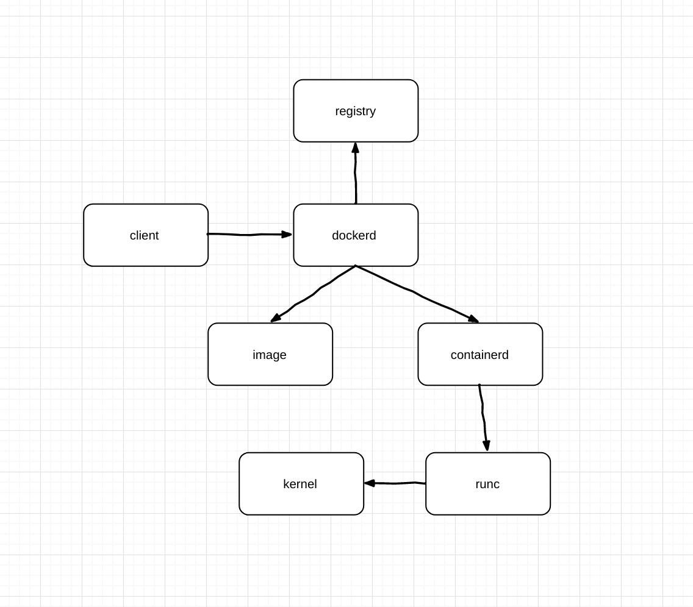
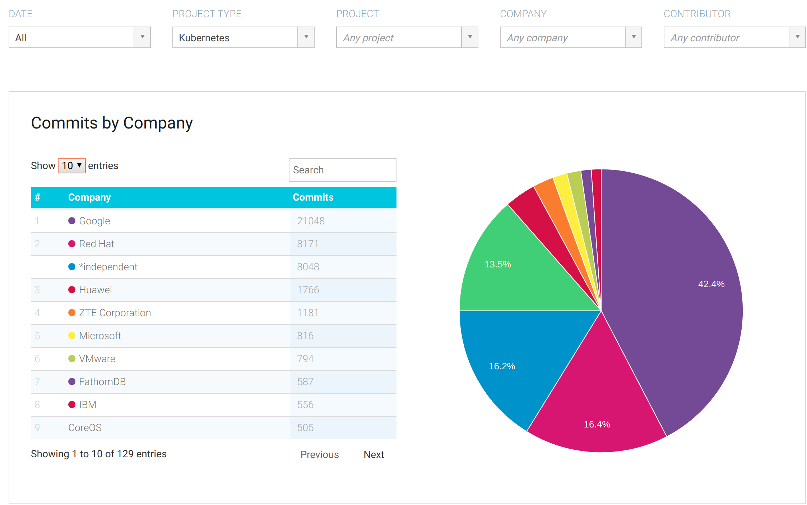
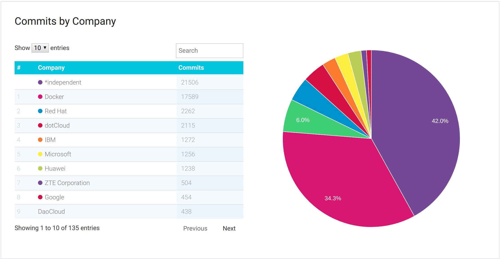
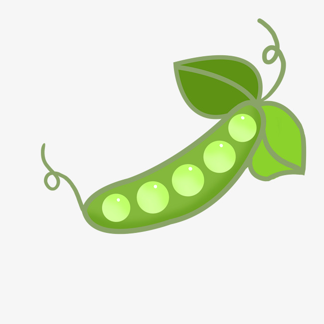
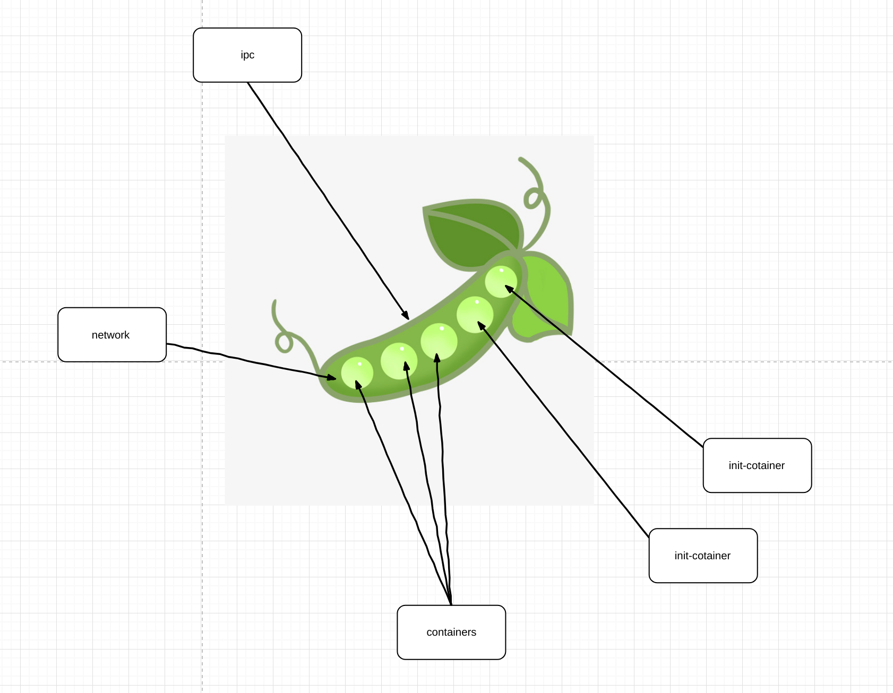
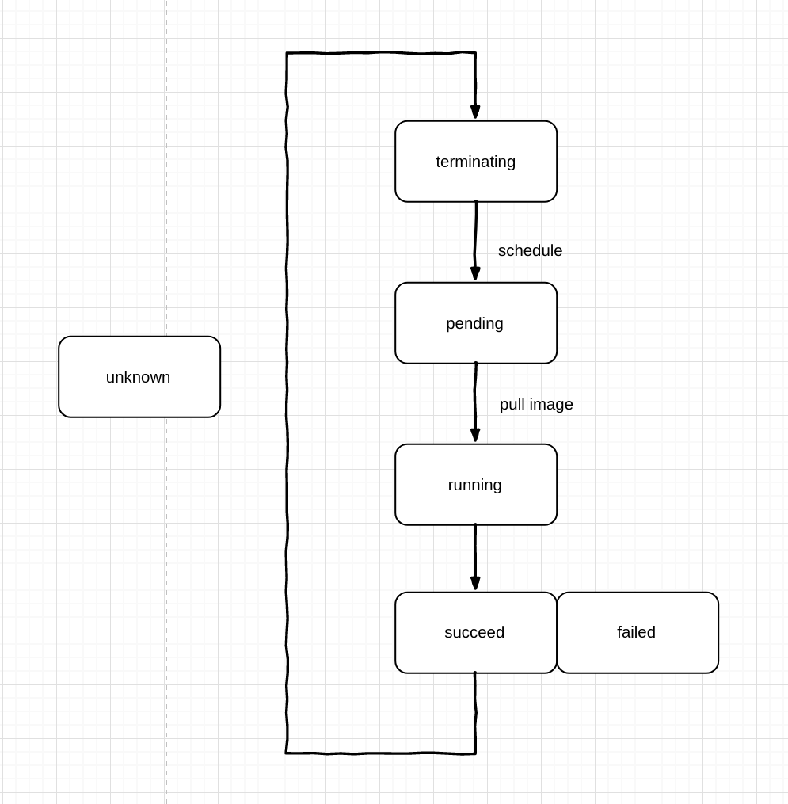

K8s course
Table of Contents
1 课程目的
- 可以独立安装 k8s 集群
- 可以简单运维 k8s 集群
- 了解 k8s 组件与代码结构
- 对云计算及生态有初步认识
- 具备通过 ckad 的能力
1.1 进阶要求
- 可以实现一个 CNI/CRD/CCM
- 成为 k8s contributor
2 课程安排
地点:会议室 时间:每周五下午 16:00-17:00 时间安排: 45min(讲解) + 15min(答疑) 作业形式: 问卷与实际操作
3 了解 kubernetes 之前
3.1 课程大纲
- 操作系统基础
- 简介 docker 与 container
- docker 与虚拟机的区别
- 认识什么是 kubernetes
3.2 Cgroup、Container 与 OCI
3.2.1 cgroups & namespaces & chroot & systemd
3.2.2 Container 的前世今生
- 1979 — chroot 一切的开始
- 2000 — FreeBSD Jails 支持进程沙盒
- 2001 — Linux VServer 加入 security context
- 2004 — Solaris Containers 支持在 x86 和 SPARC 系统
- 2005 — OpenVZ IPC 与设备的隔离
- 2006 — Process Containers kernel 2.6.24
- 2008 — LXC 第一个最完善的 Linux 容器管理器的实现方案;现在容器技术的雏形
- 2011 — Warde CloudFoundry 支持多个操作系统
- 2013 — LMCTFY Let Me Contain That For You Google libcontainer 的前身
- 2013 — Docker images swarm 集大成者
- 2014 — Rocket CoreOS
- 2016 — Windows Containers Hyper-v
- 2017 — Pouch 富容器 Alibaba
- 2018 — Podman without of daemon
- 2018 — WIndows Containers Windows-base
3.2.3 OCI
open container initiative5
Linux 基金会制定一个开放的工业化标准：容器运行时标准 （runtime spec）和 容器镜像标准（image spec）
- image spec 文件系统 manifest 文件 index 文件
- runtime spec Container ID PID 容器文件目录 容器创建 容器进程启动 容器暂停 容器暂停信号捕获 容器的生命周期: init creating created running stopped
3.2.4 docker 中容器的创建

3.3 Docker 与虚拟机
3.3.1 主流虚拟机的原理
3.3.2 容器与虚拟机
容器本身是虚拟化技术中的一种,作为最轻量级的虚拟化方案出现
但容器与虚拟机有本质上的区别
容器实际上是一个进程，而虚拟机则是一个完整的操作系统
3.4 kubernetes 是什么
Production-Grade Container Scheduling and Management 这是 kubernetes github 仓库上对这个项目的描述
3.4.1 我们为什么需要编排
我们不妨了解一下小明的故事
- 小明是一个开发者
小明是一个开发者，这一天他想到了一个点子，他做了一个静态的网站，现在他想把网站上线。 于是他将代码拷贝到了租赁的服务器上运行，因为他有三个服务器，他不想每次都把改动传递很多次.
于是他想到了 Docker,他写了一个 Dockerfile 将网站打包成了 Docker 镜像，传到了镜像仓库， 他每次只要到三个服务器上更新容器的镜像就好了
- 小明的网站提供其他的服务了
小明的网站提供其他的服务了，小明的网站现在不仅仅是一个静态页面了，现在小明需要爬取一些数据，然后展示出来， 于是小明现在有两个服务：一个展示网站，一个用来爬取数据的服务。 小明遇到了问题:展示网站怎么连接到爬取数据的服务上，
于是小明将容器暴露了相应的端口用于内部服务的访问
- 小明的业务又扩展了
小明的业务又扩展了，小明现在需要将爬取所有的数据存下来，放便做统计与查询。
小明将本地的目录挂载到了容器目录中，于是所有的数据就都保存在了本地。
- 小明的业务发展的特别迅速
小明的业务发展的特别迅速，他有了几十倍的用户了，原有的三台服务器无法承受过大的压力，于是小明又多租了 17 台服务器， 这时小明遇到了几个问题：每一台机器存储的数据无法同步，而且现在每做一次改动都要改动到 20 台服务器上，小明觉得太麻烦了
于是小明将几台机器做成了 NFS 的服务器，然后所有的容器都挂载 NFS 的目录进行存储，又使用了一些批量处理工具。小明对自己很满意。
- 小明的服务间歇性的被冲跨了
小明的服务间歇性的被冲跨了，小明突然发现自己的服务在每天晚上凌晨左右会有几台被巨大的请求冲垮，小明现在无力负担起更多的服务器了， 小明只能运营商处购买负载均衡服务，试图将流量均匀的分配到不同的机器上。这样过了几天，小明发现有许多用户抱怨内容出现丢失了， 小明经过排查发现，由于 DNS 的原因之前的每个用户一般都被会到特定的几台机器上，由于 NFS 挂载的不是相同的目录，造成目录之间数据 不一致。现在用户的请求统一经过运营商的负载均衡，导致用户的内容丢失。在加上运营商机器并不是很稳定，导致服务器经常失连。 小明已经陷入了深深的运维漩涡当中，小明不想再维护了。
3.4.2 kubernetes 的历史
kubernetes 由 Google 内部的编排系统 Borg 演化出来
2014 年 6 月揭牌
2015年7月22日K8S迭代到 v 1.0并正式对外公布
如今已经正式版本已到 1.16.3
3.5 kubernetes 生态与社区
3.5.2 kubernetes 社区
https://github.com/kubernetes/kubernetes
| Project | contributors | commit | issue | PR | members | release | star | fork |
|---|---|---|---|---|---|---|---|---|
| Docker | 1845 | 38049 | 3673 | 197 | 20 | 198 | 55.8k | 16.1k |
| Kubernetes | 2378 | 86276 | 2244 | 1079 | 529 | 586 | 60.8k | 21.5k |
| Tidb | 372 | 9834 | 1086 | 136 | 63 | 81 | 21.7k | 3.3k |


3.6 课后作业
1.安装 docker,并运行一个 nginx
2.给一个容器设置 –cpus –cpuset-cpus 并观察 cpu 的使用
3.一个四核的机器上设置 –cpus=2.5 –cpuset-cpus="0,1" 那么容器最多可以占用多少 cpu 资源?为什么？
请将 1 、3 两个问题的答案发送至邮箱,截至日期为下次课程开始之前
4 Containers 与 Pods
4.1 课程大纲
[ ]了解 CRI 以及 CRI 的意义，从而了解 k8s 的方向[ ]明白 pods 与 containers 的区别与关系[ ]了解 pods 的原理[ ]初识 k8s yaml
4.2 CRI
4.2.1 CRI 的意义
kubernetes 将其可以剥离开的部分转换为接口对外开放出去
1.减少核心的代码可以保证代码稳定性与产品质量
2.k8s 不依赖于某几种场景，这种方式带给 k8s 更多的可能
CRI 就是其开放出去的一个，CRI (container runtime interface)
CRI 的出现是对 Docker 的一个巨大打击 CRI 出现在 kubernetes 1.5 的版本中 2016 年 12 月，而正是此时，docker 公司正在进行他的商业化的第一步
Docker 的最大优势在于庞大的用户与及其优秀的生态,许多人都是从 Docker 才了解了容器，包括现在仍然有许多人提起容器仅能想起 Docker
kubernetes 一定不会将自己与 Docker 捆绑在同一条船上，CRI 出现之前尚可称为同床异梦,而在这之后则是真正的分居
kubernetes 在此刻已经展现了自己的爪牙
4.2.2 CRI 的接口
CRI Proto6
service RuntimeService { rpc Version(VersionRequest) returns (VersionResponse) {} rpc RunPodSandbox(RunPodSandboxRequest) returns (RunPodSandboxResponse) {} rpc StopPodSandbox(StopPodSandboxRequest) returns (StopPodSandboxResponse) {} rpc RemovePodSandbox(RemovePodSandboxRequest) returns (RemovePodSandboxResponse) {} rpc PodSandboxStatus(PodSandboxStatusRequest) returns (PodSandboxStatusResponse) {} rpc ListPodSandbox(ListPodSandboxRequest) returns (ListPodSandboxResponse) {} rpc CreateContainer(CreateContainerRequest) returns (CreateContainerResponse) {} rpc StartContainer(StartContainerRequest) returns (StartContainerResponse) {} rpc StopContainer(StopContainerRequest) returns (StopContainerResponse) {} rpc RemoveContainer(RemoveContainerRequest) returns (RemoveContainerResponse) {} rpc ListContainers(ListContainersRequest) returns (ListContainersResponse) {} rpc ContainerStatus(ContainerStatusRequest) returns (ContainerStatusResponse) {} rpc ExecSync(ExecSyncRequest) returns (ExecSyncResponse) {} rpc Exec(ExecRequest) returns (ExecResponse) {} rpc Attach(AttachRequest) returns (AttachResponse) {} rpc PortForward(PortForwardRequest) returns (PortForwardResponse) {} rpc UpdateRuntimeConfig(UpdateRuntimeConfigRequest) returns (UpdateRuntimeConfigResponse) {} rpc Status(StatusRequest) returns (StatusResponse) {} }
这里有了个新的概念 PodSandbox 就是我们下面要说到的 Pod
4.3 容器与 Pod
4.3.1 Pod 是什么

Pod 是 kubernetes 中部署与调度的最小单元
听起来是不是似曾相识
4.3.2 Pod 里面有什么

Pod 内的容器共享网络与存储
这意味着在同一个 Pod 中的容器有着相同的 IP 与端口
4.3.3 Pod 实现原理
pause-container 是实现 Pod 共享 namespace 的原因
在 linux 中，当你启动一个进程的时候，子进程自动集成父进程的 namespace
当你使用 unshare 的方式时会创建一个新的 namespace
pause-container 就是做这个事情的，当启动一个 Pod 时，kubernetes 创建了一个 pause 容器
并单独的创建了一个 net namespace，然后将其余的容器加入到了这个 pause 容器创建的 namespace 中
Pod 中可以配置一个参数 shareProcessNamespace 控制是否可以共享 PID
当你的 Pod 没有启用该参数时，在 container 中可以发现 pid 1 是 container commands
当启用时， pid 1 是 pause
会用在一些特定的场景
1.有一些镜像在 PID 不是 1 无法启动例如 systemd
2./proc 下面文件共享
3.文件系统共享 /proc/$pid/root
4.3.4 init containers
在 Pod 中,你无法控制两个 container 的启动顺序，但是所有的 container 在启动之前都会先启动 init containers
init containers 可以有多个，init containers 是有顺序的
init containers 使用的是 linux namespace secrets
init containers 场景
1.加载一些工具
2.可以作为应用的部署器
4.3.5 POD 的生命周期
| value | Description |
|---|---|
| Pending | The Pod has been accepted by the Kubernetes system, but one or more of the Container images has not been created. This includes time before being scheduled as well as time spent downloading images over the network, which could take a while. |
| Running | The Pod has been bound to a node, and all of the Containers have been created. At least one Container is still running, or is in the process of starting or restarting |
| Succeeded | All Containers in the Pod have terminated in success, and will not be restarted. |
| Failed | All Containers in the Pod have terminated, and at least one Container has terminated in failure. That is, the Container either exited with non-zero status or was terminated by the system. |
| Unknown | For some reason the state of the Pod could not be obtained, typically due to an error in communicating with the host of the Pod |

4.3.6 Pod 的回收
Pod 的回收在 kubernetes 中面临这样几个问题:
1.清理 Pod 这个资源
2.清理 Pod 关联的其他资源
3.清理 Pod 中的容器
简单的来看是这样的一个流程,但这其中还涉及 kubelet 的垃圾回收机制, 会在之后的章节中详细说明
客户端请求删除 Pod –>
apiserver 更新 Pod 信息 –>
kubelet 优雅释放 Pod 资源 –>
kubelet 请求删除 Pod –>
apiserver 删除 etcd 中 Pod 信息–>
kubelet完成最终Pod的资源清理
4.3.7 multi Pod 的实际场景
sidecar 到 service mesh
如果说 kubernetes 管理你的基础设施 service mesh 则管理应用的全部
比如说 服务发现 融断 负载均衡 灰度发布甚至安全

4.4 课后作业
1.简单论述 OCI 与 CRI 的区别
2.使用提供的工具模拟一个 Pod tools:
- unshare
- docker run
images:
- nginx
- daocloud.io/daocloud/dao-2048
- gcr.azk8s.cn/google_containers/pause:3.1
config:
cat <<EOF >> nginx.conf error_log stderr; events { worker_connections 1024; } http { access_log /dev/stdout combined; server { listen 8080 default_server; server_name example.com www.example.com; location / { proxy_pass http://127.0.0.1:80; } } } EOF
1.nginx 不暴露端口
2.pause 暴露端口 30001:8080
3.2048 不暴露端口
4.当访问本地的 30001 端口时可以出现 2048 游戏界面
5 3.部署你的第一个 kubernetes 集群
5.0.1 课程大纲
[ ]部署一个三个节点的 kubernetes 集群[ ]在 kubernetes 集群上部署一个经典的微服务程序[ ]了解 kubernetes 的 yaml 格式与写法[ ]了解 kubectl 的命令[ ]通过使用 kubectl 修改 yaml 完成对 deploy 的修改
6 4.Pod controllers
7 Service Loadbalanceing and Networking
8 Storage
9 Security
10 初识 kubernetes 组件
10.0.1 课程大纲
[ ]了解 kubernetes 有哪些组件[ ]简介 kubernetes 内的对象与资源